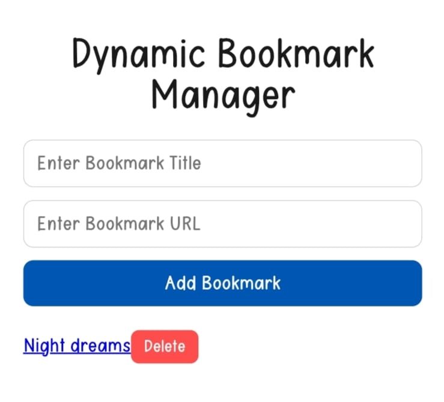
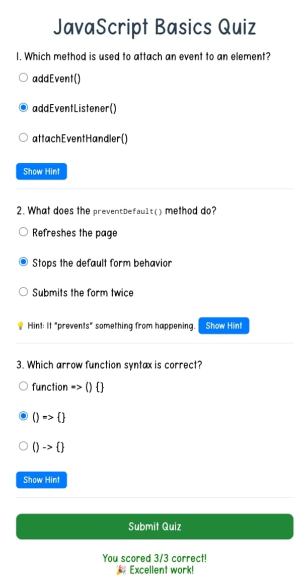

<!-- Projects -->
<link rel="stylesheet" href="portfolio.css">
<section id="projects">
   <div class="theme"><h2 class="section-title">My Projects</h2></div>
     <div class="project-box">
        <h3 class="project-name">Dynamic Book Manager</h3><br>
        <p>It is a modern , data-driven sales strategy where account lists(books) are continuously updated and automatically distributed to sales reps based on , for example , engagement, capacity , and potential , rather than static , fixed territories.</p><br>
        <p>In this project , I will build a simple tool to add and manage website bookmarks -- similar to a mini browser favourites list!<br>
        I will create new bookmarks dynamically , display them on the page , and even delete them -- all using JavaScript DOM manipulation and event delegation.</p><br>
        <div class="section-img">
        
    </div>
        <a href="bookmanager/bookmanager.html">Dynamic Book Manager</a><br>
        <br><p>check the above link...</p><br><hr><br>
        <h3 class="project-name">Grading the Quiz and Showing Feedback</h3><br>
        <p>In this project , I will calculate the score based on the user's selections and show dynamic feedback for the quiz. All answers for this quiz are "b", so scoring is based on whether the selected radio button's value is "b". </p><br>
        <p><strong>Inside the form's submit event</strong>, after validating that all questions are answered:<br>
             Loop through all radio buttons of each question using <strong>forEach().</strong><br>
             Used the <strong>.checked</strong> property to find the selected option.<br>
             Used the <strong>.value</strong> to check the if the selected option is <strong>"b"</strong><br>
             For each correct selection <strong>(value === "b")</strong> , increase a <strong>score</strong> variable by 1.<br>
           </p>
        <p>Dispaly the score in the result box. Add personalized feedback messages based on the score.</p><br>
        <div class="section-img">
        
    </div>
        <a href="quiz/quiz.html">Grading the Quiz and Showing Feedback.</a><br>
        <br><p>check the above link...</p><br><hr><br>
        <h3 class="project-name">Smart Task Tracker</h3><br>
        <p>It is a comprehensive solution that tracks projects, resources, and client communication in one place. It features AI-driven resource planning to balance workloads without overworking team members.</p><br>
        <div class="section-img">
        
    </div>
        <a href="smart/smart.html">Smart Task Tracker</a><br>
        <br><p>check the above link...</p><br><hr><br>
    </div>
</section>